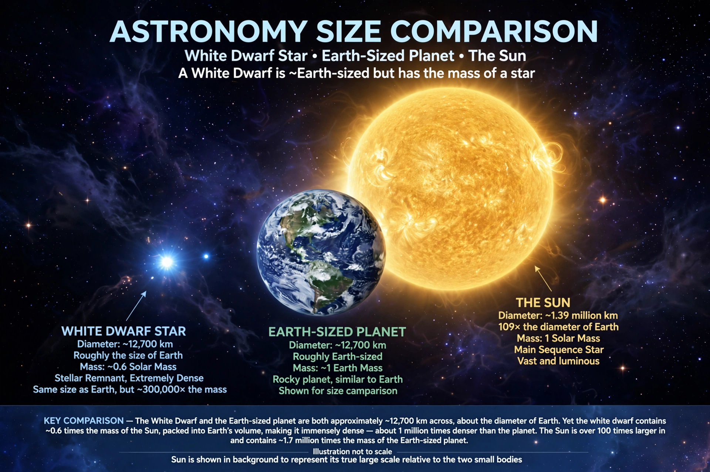

White dwarf

[Image: Size comparison illustration: a white dwarf beside the Earth, which it roughly matches in size]A white dwarf is a stellar core remnant composed mostly of electron-degenerate matter. A white dwarf is very dense: in an average-sized example, its mass is comparable to the Sun's and its volume to the Earth's. White dwarfs are the end state of stars that are not massive enough to become neutron stars or black holes — which includes over 97% of stars in the Milky Way.
Having exhausted nuclear fuel, a white dwarf shines only by radiating away stored heat, cooling over billions of years toward a hypothetical black dwarf (none can exist yet: the universe is not old enough). The first discovered was the companion of Sirius, Sirius B (recognised 1862, understood by 1910s–20s), and the quantum-mechanical explanation of their support — electron degeneracy pressure — was given by Ralph Fowler (1926) and extended relativistically by Subrahmanyan Chandrasekhar (1930).
Structure and the Chandrasekhar limit
In a white dwarf the electrons form a degenerate gas whose pressure supports the star even at zero temperature, independent of thermal pressure. Counterintuitively, more massive white dwarfs are smaller. When Chandrasekhar included special relativity he found a maximum mass, about 1.44 solar masses (the Chandrasekhar limit), above which degeneracy pressure fails and collapse continues to a neutron star or black hole.
Fate and uses
White dwarfs cool and crystallise over cosmic time; the oldest, in the galactic disc, act as clocks dating the Galaxy (~10 billion years). In binaries, a white dwarf accreting matter from a companion can produce novae, or — pushed over the Chandrasekhar limit or merged with another white dwarf — explode completely as a Type Ia supernova, the standardisable candles used to discover the universe's accelerating expansion.